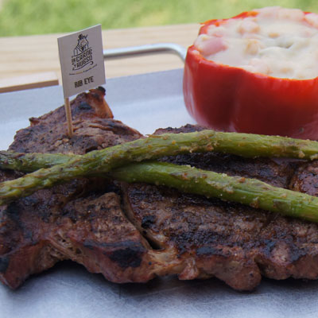

Corte atractivo a la vista con hueso en forma de T que se obtiene de la parte posterior del lomo de res, posee marmoleo ligero con delicioso sabor y una excelente textura.
Corte sin hueso que proviene de la parte media del lomo excluyendo el hueso y de un músculo que no trabaja mucho, por ello su particularidad principal es ser carne tierna. Se caracteriza por tener una excelente combinación de textura firme y buen marmoleo que ofrece una suavidad y sabor excepcionales.
- 
Este corte de carne no tiene hueso y se obtiene del centro del costillar, posee una gran cantidad de marmoleo adherido al músculo que lo hace especialmente tierno y de gran sabor. Sin cartílago ni tejido conectivo, contiene la grasa natural.
Este corte se obtiene de la parte superior del lomo, considerado un corte magro (limpio, sin grasa y sin nervios) por su poca cantidad de marmoleo y sin hueso. Se caracteriza por su sabor suave combinado con una textura firme lo que permite que sea una excelente opción para marinados, especias y cubiertas para intensificar su sabor.